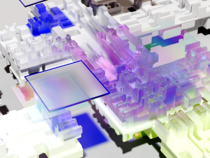

透過
AI工具王的
強大模型
讓您的業務更聰明

我們的服務
我們相信透過 AI 技術
， 包括圖像識別、自然語言處理和機器翻
譯等，讓您更快、更準確地做出決策。
-

快速
我們先進的推理基礎設施提供了極短的響應時
間，讓你的產品服務不間斷。 -

靈活
我們的服務可以根據您的需求進行靈活調整，
同時還可以滿足不同項目和預算的需求。 -

擴充
我們的服務支持多種擴充選項，可以滿足您的
不斷增長的 AI 需求。
來自合作夥伴


-

非常喜歡 AI工具王 提供的 AI 模型租賃服務，使用起來非常方便，而且效果非常好。對於我們公司的業務來說，這個服務非常重要，因為我們需要大量的數據進行分析和預測，AI工具王 提供的 AI 模型能夠幫助我們節省大量時間和成本，實在是太棒了！

陳小姐
ABC科技有限公司 -
作為一家醫療器材公司，我們非常關注人工智能技術的應用，而 AI工具王 提供的 AI 模型租賃服務為我們帶來了很大的幫助。我們使用 AI工具王 的模型進行醫學影像分析和預測，這些模型非常精確，能夠幫助我們更好地診斷病情，提高治療效果。感謝 AI工具王 團隊的辛勤工作！

劉小姐
XYZ 醫療器材有限公司 -
我們銀行一直在尋找能夠幫助我們提高風險控制和客戶服務的解決方案，而 AI工具王 提供的 AI 模型租賃服務正好滿足了我們的需求。我們使用 AI工具王 的模型進行客戶信用評估和詐騙檢測等任務，這些模型非常準確，能夠幫助我們更好地控制風險，提高客戶滿意度。非常感謝 AI工具王 團隊的支持！

黃先生
EFG 銀行
這些超酷的應用，都來自 AI工具王
-

Chatbot Builder
建立智能化的聊天機器人，解答常見問題、提供客戶支援、收集反饋等。
AI 模型
卡卡#聊天

-

Image Recognition Platform
專業的圖像識別平台，識別圖像、分類、標記等。
AI 模型
杰杰#影像辨識
-

Language Translation API
專業的語言翻譯 API，實現文本翻譯功能，支援多種格式的文本。
AI 模型
琪琪#翻譯
-

Sentiment Analysis API
自動識別文本中的情感傾向，包括正向、負向和中性等。適用於情感分析、社交媒體監控、市場調查等。
AI 模型
昊昊#行銷
-

Fraud Detection Platform
預防詐騙活動，適用於銀行、金融、電商等。
AI 模型
卡卡#客服
-

Voice Assistant SDK
通過語音控制應用程式、設備，實現多種功能，例如播放音樂、查詢天氣、發送信息等。
AI 模型
杰杰#生產力